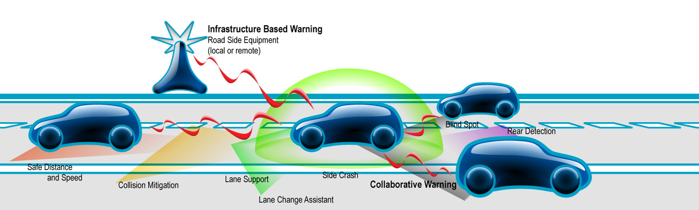

Intelligent Transportation System
Intelligent Transportation System is a method to deal with the current issue related to traffic congestion, environmental degradation, faster travel, better safety for users, or nevertheless make it more efficient. This article proposes multiple ways or ideas towards Intelligent Transportation System.

INTELLIGENT TRANSPORTATION SYSTEM
EXECUTIVE SUMMARY
Population and economic growth have led to the outburst of a lot of vehicles on the urban streets of India. India has experienced a tremendous increase in number of registered vehicles that are over 210 million as of 2015. Apart from the Economy, the rural to urban migration has led to an upsurge in demand for the vehicles and transportation infrastructure. The current technologies and facilities are not capable enough to tackle this vehicular growth leading to congestion and resulted in posing greater challenges to the authorities in the urban cities.
Intelligent Transportation system (ITS) is a well-known method to deal with the current issue or nevertheless make is more efficient. ITS aims are reducing traffic congestion, control environmental degradation systems, faster travel time, better safety for the users, and better infrastructure for the community¬. India is a country with a population density of 387 people per square kilometer, ITS must function is a slightly different way. Along with Traffic management systems, Traveler Information systems, vehicle control systems, public transportation systems and commercial vehicle operations system, other small issues like, complete dependency on roads as a means of transport, efficient pedestrian systems, better laws against proper parking and lane disciple should be dealt with.
CURRENT SYSTEM IN USE
The current systems in use are very inefficient and outdated and are not up to the mark to meet the current needs. India has a very poor traffic management system, where we depend on a traffic police to deviate and handle congestions at junctions by manually operating the traffic lights, poor laws against the street vendors, poor ticket generation system to the traffic violators, lack of automation in generation of toll tickets on the highways, slower responses towards accidents, and lack of real-time communication with the drivers.
TRAFFIC MANAGEMENT SYSTEM
TRAFFIC MONITORING SYSTEM
Traffic monitoring system provides a way of centralizing the control of traffic lights across the city using better sensor technology, more reliable communication channels and advanced information processing capabilities. With the help of this technology, the traffic in any part of the city can be noticed and moderated as required. Artificial intelligence can be used to identify the moving traffic and prioritize that particular route. Thermal imaging cameras can be utilized to detect the density of vehicles in any particular lane. Automated number plate readers can be used to automatically generate tickets to the violators. Use of all these Technologies will result in real-time monitoring capabilities which can be used to anticipate the incoming traffic and reduce congestions at further junctions. New data processing techniques can be used to set variable speed limits and facilitate faster and smoother movements. By centralizing the traffic management system, integrated Corridor management techniques can be applied in a cooperative way to both freeway networks (ex: Ramp meters) and to signalized arterial networks (ex: Advanced signal timing algorithms). This will greatly reduce the amount of idling. This system also facilitates the spreading of the traffic from a peak center to larger area.
TRAVELLER INFORMATION SYSTEM
To make things more convenient for the driver, a wide variety of information systems for travelers is made available with the help of ITS. Route guidance system, maybe on board, off-board or smart phone navigations, have to me made efficient. As a centralized system can provide real time information about the traffic ahead, dynamic message sign boards can be implied to give the travelers more information on their route ahead. A road weather information system can be used which measure real-time atmospheric parameters, pavement conditions, water levels and visibility which can pose to be of great importance to the commuters. Geo-locations systems coupled with the route guidance system allow users to find specific locations allowing users to cut down excessive driving. Electronic payments systems should become more prevalent, allowing payment of tolls and fees with-out actually stopping at any station for financial transaction. This could results in lesser congestions at the highways and expressways.
ACTIVE LAWS
In an overly populated country like India, laws are broken more often than in any other country. Especially in a country like India to facilitate ITS, having few laws enforced become very crucial to ensure its proper functioning. The access of pathways should be restricted to pedestrians and pedestrians only, having motorcycle riders going over it, having car and trucks being parked it and street vendors having their stalls on it, which not only lead to the damage of the infrastructure but also lead to a mix of vehicular traffic and a person on foot. This hampers the safety of the citizens and poses a lot to problem to the smooth movement of the automobiles. More pedestrian crossways or investment in over bridges will stop them from rushing into the roads at random intersections.
VEHICLE SYSTEMS
Vehicles need to take advantage of the modern control systems faster on-board processors, wireless communication to provide features that improve the vehicle performance. Longitudinal Assistance systems concerned with front and rear end collisions can be employed, these system use on-board radar, LiDAR and computer vision technology to monitor headway between vehicle and by providing feedback to the breaking system of the vehicles, through which collisions can be reduced. Adaptive cruise control systems not only enable the driver to select a desired speed but also allow setting the following distance. Lateral Assistance systems help increase the vehicle performance during lane changes, merges or any kind of turning movement. With the help of sensors, computer vision technology and wireless communication, drivers can be warned about the pending lateral collisions.Wireless communication systems have already played a great role through cellular phones, in addition to this dedicated short range communication radios which enable vehicle-to-vehicle (V2V), vehicle-to-infrastructure (V2I), and infrastructure-to-vehicle (I2V) application which mainly focus on improving safety can be employed.
PUBLIC TRANSPORATATION SYSTEMS
Public transportation forms an integral part of Indian society. Buses contribute to 90% of transportation in the cities and Mumbai sub-urban handles 6.3 million commuters daily. So, having an efficient public transportation system is a key in ITS. The application of ITS in public transportation system improves the services by improving the reliability and efficiency of operations. Through data analysis, the agencies can provide better information to the passengers and take concrete decisions for overall operation and management. Providing facilities of surveillance, automated vehicle location system, passenger information system, automated fare collection system, Internet facilities can encourage people to use more of these than their own vehicles. The use of public transportation is a major contribution towards environmental conversation, which is a major domain of ITS. The dependency on public road transportation should be reduced by investing more into projects like metro which reduce the travel time by more than half.
EMERGENCY SYSTEMS
Ambulances, fire trucks, and police vans help keep a city together and look upon the safety of the society. Facilitating easier transportation to such vehicles in case of emergencies is an essential part in intelligent transportation system. The use of on-board navigation systems and wireless connections to the city’s traffic monitoring system can help then reach their destination with having to wait in long traffic congestions. Also connecting these to traveler information systems can notify the drivers to clear the lanes for these vehicles beforehand.
CONTRIBUTION TOWARDS THE ENVIRONMENT
Due the potential their potential to improve road safety, reduce congestions and enhance mobility, ITS has generated a lot of enthusiasm in the community. In addition to all these, ITS also has a major contribution towards reducing both pollutants and Green House Gas (GHG) emissions, as well as reducing fuel consumption. It is statically proven that transportation sector is responsible for more than third of the GHG emissions. Through ITS which facilitates smooth flow of traffic and reduces constant acceleration and deceleration of vehicles and reduces the amount of idling has will lead to an increase of about 20% in the fuel consumption efficiency which indirectly enhances the city’s economy. The encouragement to use public transportation system adds in on the conservation. Use of solar panels on the traffic and surveillance camera would lead to reduced consumption of electricity. ITS facilities like Eco-Lanes Management, Eco-speed Harmonization, eco-Cooperative adaptive cruise control, Eco-ramp metering, connected eco-driving, and multi-modal traveler information can all contribute to an environmentally sustained transportation system.


Add Comment